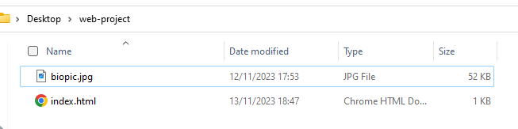

This is a step-by-step tutorial of how to set up a personal web page. You will need the following:
Start by creating a directory somewhere easy to find, (i.e. desktop), and name it something like “web-projects”. (Note: a “directory” is the coding term for folder on a computer).
We will use this directory to store everything that will be on your website. For now, add a profile picture to this directory
For this you will need to open VSC. (Visual Studio Code: download)
If you don’t already have VSC, click the link above and follow the instructions to download and install the software.
Open VSC and click
You should have a screen that looks something like this.
Proceed to fill in your title name (this will be what is displayed on your Tab bar). Once this is completed enter the following text in the space below "
"
Note: make sure all the spelling/punctuation of the file names are exact and correspond with the files/directories created earlier.
Now its time to save our work and officially create our html file.
Click save as and navigate to the directory you made earlier. Save the file name is “index.html”.
Once this is done, we can test our code by clicking on the “Run and Debug icon on the left of your VSC window.
Note: If something doesn't work, check for typos, including punctuation
To learn more about the components of html visit MDN, HTML basics
Open GitHub and follow the instructions to create your online profile.
Now that you have a profile you will need to create a repository. (Note: This is what you will type into the browser)
You can now test your personal webpage by typing your repository from earlier into the browser.

Follow the link to MDN's CSS Basics to start organising and adding style to you page